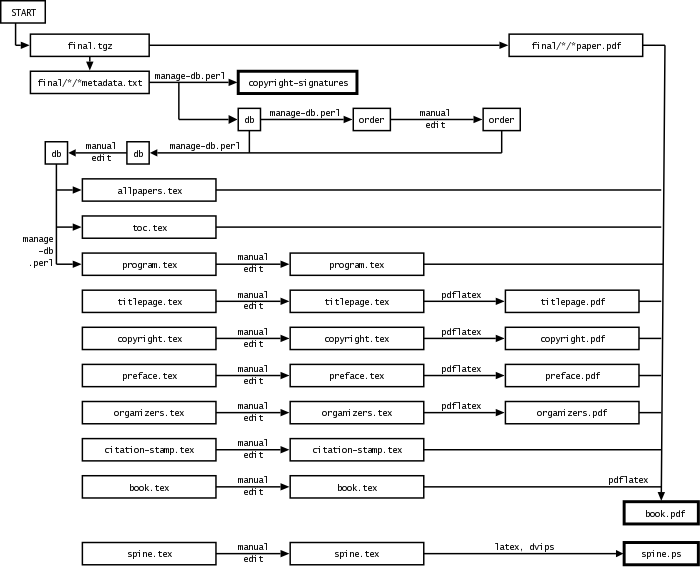

This guide to the aclpub software will help you create
a single proceedings volume for an ACL-affiliated conference.
Presumably, you are one of the following:
In short, you are a "book chair." This document will assume that you are specifically the program chair of a workshop, since most workshops are run like this.
Note: For our purposes, the student research workshop and the short paper session are considered to be separate logical books, even though they may be physically bound together (along with tutorial program info) into a single "companion volume."
Note:There is an additional HOWTO aimed at the publications chair of the overall conference.
We have tried to automate the process as much as possible. However, it still requires manual input. You should allocate 2-3 hours for this process. The final look of your proceedings is your responsibility!
By following these instructions, you will produce the following:
a single book.pdf file that contains your entire
proceedings volume. The volume will then be professionally printed
and also distributed as a PDF file on the conference CD-ROM. It is
meant to look good both when printed and when viewed in a browser onscreen during
the conference.
In brief, the scripts use the LaTeX pdfpages package
to combine all the papers plus front matter (title pages, tables of contents, etc.)
into a single PDF file.
Page numbers and citation/copyright information are automatically
"stamped" onto the included papers. Papers with incorrect margins are
shifted vertically at your discretion. The workshop program, the
table of contents, and the author index are produced almost
automatically and contain clickable hyperlinks for the reader's
convenience.
a spine.ps file for the binding of the printed
volume.
a cdrom directory that will be included on the
conference CD-ROM. This contains HTML web pages, modfied PDF and
PostScript versions of the individual papers, and BibTeX
bibliography entries.
a copyright-signatures file with electronic
signatures from the authors. This will be sent to the ACL main
office.
an advertisement.html webpage that you, or
the conference webmaster, can use to advertise your program in
advance.
a few auxiliary data files that will be used again by the publications chair to produce other material for the CD-ROM (e.g., a consolidated BibTeX database and a consolidated author index) and the online ACL Anthology.
Here is a gratuitous flowchart to illustrate the process. You will be using a makefile that knows all about this flowchart and will rebuild files whenever necessary.

If you have trouble figuring out how to use the scripts, ask the publications chair for help.
If you think there is something wrong with the scripts, or have constructive comments, email the publications chairs.
If you want to improve the scripts or documentation, you can check changes into the CVS repository. (Contact Jason Eisner for CVS write access.)
Acknowledgments: The aclpub package and documentation were built in 2005 by Jason Eisner and Philipp Koehn, based in part on scripts by David Yarowsky that had been used for several years previously.
You'll want to use a Unix or Cygwin machine that offers all the "usual" Unix commands, including CVS, GNU make, and a not-too-old TeX distribution that includes the pdfpages package.
You'll also want to install the xpdf package in order to have the tool pdftops.
First go to your home directory and grab the latest version of the
software. This will create a directory ~/aclpub:
cvs -d :pserver:anoncvs@ftp.clsp.jhu.edu:/aclpub checkout aclpub
If you'd rather put the software somewhere else, go
ahead. Just set the ACLPUB environment variable to the
directory where you put it:
To check whether you're running bash or tcsh, runexport ACLPUB=~/editing/myworkshop/aclpub # in sh or bash setenv ACLPUB ~/editing/myworkshop/aclpub # in csh or tcsh
echo $0(that's a zero, not the letter O).
Create a directory somewhere, called proceedings.
You will do all your work in this directory. Eventually, you'll
send a copy of this directory to the publications chair.
Copy the file .../aclpub/make/Makefile_bookchair
to .../proceedings/Makefile.
Depending on how your system is configured, you may soon get a message asking you to install some less common Perl modules. If you would like to check for this message now, type the following:
If you don't get any instructions, your system is okay. If you do, following these instructions will result in the download and installation of the necessary Perl models (Text::PDF, and Compress:Zlib, which it depends on). You can choose to install these system-wide, or in the local directory. If you install then in the local directory, make sure to set the PERL5LIB environment variable to include the lib directories for each package:make perl-modules
export PERL5LIB=pathto/Compress-Zlib-1.34/lib:pathto/Text-PDF-0.29/lib:$PERL5LIB # in sh or bash setenv PERL5LIB pathto/Compress-Zlib-1.34/lib:pathto/Text-PDF-0.29/lib:$PERL5LIB # in tcsh
Assuming you used START to collect camera-ready copy, now you'll want to get the camera-ready PDF files and metadata provided by your authors.
.../proceedings/final.tgz.The tarball will soon be unpacked into a directory called
final. (Type make final if you want to make
that happen now.) If your authors upload any changes to START after
this step, you can either download a new tarball or else make manual
changes in the final directory.
Your first job is to check that your authors signed their copyright
forms via START. To create the copyright-signatures
file, type
make copyright-signatures
DO NOT EDIT THIS FILE; it is a legal record. Please review it ASAP to make sure that appropriate signatures have been provided for all papers. Then email it to the publications chair, pointing out any papers with missing or inappropriate signatures (e.g., "Mickey Mouse"). You or the publications chair will need to extract hardcopy signatures from those papers' authors in time for their papers to be included.
If you did not use START to gather the papers, you will need to get hardcopy forms from your authors. See our copyright webpage and contact the publications chairs.
Almost all the data about the papers will be maintained in a file
called db (for "database"). To create a first version
from the information in the final directory, type:
make db
You will be editing the db file below, so take a look.
(Here is a description of its FORMAT.)
Entries are separated by blank lines. Make sure that the filename lines do
not have trailing whitespace. The first entry for the ACL
2005 main proceedings looks like this:
P: 7 # submission ID of this paper T: Coarse-to-fine n-best parsing and MaxEnt discriminative reranking # title A: Charniak, Eugene # author A: Johnson, Mark # another author F: final/7/7_paper.pdf # filename of PDF file L: 8 # length in pages
If you did not use START to gather the papers and the metadata,
then you have to manually create a directory of the camera-ready PDF
papers, called final. The PDF filenames do not need to
have the form final/7/7_paper.pdf; for example, you could
use final/charniak-johnson.pdf if you prefer. You must
also create a db file of metadata in the above format.
Required fields in the db file are P:, T:, A:, F:, and
L:.
If you did use START, but want to add additional papers (invited talk
abstracts, shared task descriptions, ...), then you can add entries
to the db file similarly.
At present, each db entry including
the last must be followed by a single blank line.
Make sure to get the L: fields
right. At present, the L: field in a db
entry is only checked against the actual paper length when and if the
entry is created from START metadata. You will not get a second
warning if you don't fix it, or fix it incorrectly, or create the
db file manually without help from START.
The following command extracts the first two pages from
each paper and adds margin markings and generates a first
rough cut of the proceedings, book.pdf:
make draft
As a convenience, the following command will update
book.pdf and fire up Acrobat:
make view
The rough cut is not a full volume yet (e.g., no author index,
and only the first couple of pages of each paper will be present).
But it will reveal a number of potential problems in the automatically
produced db file or the submitted PDF files.
It is possible that your system won't be able to make
book.pdf if your version of pdflatex and
pdfpages is too old. For example, you may get a message
that it cannot handle some submitted file that is PDF version 1.5.
You could (1) upgrade your software, (2) run on a machine with more
recent software, or (3) ask the author to send you the source
.tex of the submitted file so that you can run it through
your older version of pdflatex yourself, producing a PDF
version 1.4 file.
Flip through the rough cut. Do all the fonts in the papers display and print correctly? If not, you will need to ask the author to email you a corrected version of the PDF file.
The publications chair has probably put up a webpage with
instructions for authors, based on the version at
.../aclpub/doc/authors. Remind the author to consult
that page.
You can substitute the author's corrected PDF file for the bad
version in the final directory. If the length, title, or
author list has changed for some reason, you will have to edit or
recreate the db file as well.
Also ask the author for the LaTeX or Word sources, so that you can produce the corrected PDF file yourself on your machine, if necessary.
There are three common problems:The paper uses the wrong overall font. Typically, the author didn't start his or her LaTeX file with
\documentclass[11pt]{article}
\usepackage{times}
Asian fonts don't display correctly or cause the PDF viewer
to report an error. In this case, the author will need to produce a
new version of the
PDF file, with Asian fonts embedded.
As an aid to detecting papers that have not correctly embedded Asian fonts, you can use the "make cdrom" command. One aspect of this process is the production of the cdrom/ps directory. As pdf files are converted to ps format and placed in that directory, diagnostic messages regarding fonts will be generated by the pdftops command.
In particular the following warnings may appear when processing papers by authors from Japan:
Error: Unknown character collection 'Adobe-Japan1'
Error: Couldn't find a font to substitute for 'Ryumin-Light-Identity-H' ('Adobe-Japan1' character collection)
Error: Couldn't find a font to substitute for 'GothicBBB-Medium-Identity-H' ('Adobe-Japan1' character collection)
Also, the following warnings may appear when processing papers by authors from China:
Error: Unknown character collection 'Adobe-GB1'
Error: Couldn't find 'GBK-EUC-H' CMap file for 'Adobe-GB1' collection
Error: Unknown CMap 'GBK-EUC-H' for character collection 'Adobe-GB1'
Error: Unknown font tag 'F1'
A paper's individual camera-ready PDF file looks okay when
viewed alone, but when it appears as part of book.pdf,
there is too much space between the letters.
We are not sure why this occasionally happens. But we suspect that
it is a problem with embedded fonts. The solution is to recreate
the paper's PDF file with a more up-to-date version of
pdflatex.
Very occasionally, a bad paper may cause
acroread to crash. Try to isolate the bad paper by viewing
the individually submitted PDF files in the final
directory, and contact the author.
db FileNow you will check that the metadata in the db are
correct and correctly formatted.
Count the papers to make sure you're not missing any (e.g., due to an author's failure to submit camera-ready copy).
For
each paper in the rough cut, check that the db information
(which was supplied by the author when submitting the camera-ready paper)
really matches the author/title on the actual camera-ready paper.
If not, fix the db file.
Each author in the db file should have a separate
A: entry. (Note: the R: entry is for debugging
help only.) Sometimes the splitting of multiple authors into separate
authors is faulty and needs to be fixed.
Capitalization of authors in the db file
should be as in BibTeX. Example:
Piet Q. van Oostrum, Jr.
db file.Capitalization of titles in the db file should
be exactly as in BibTeX, since the db file will
be used to create public BibTeX files for use by anyone.
BibTeX format is designed to provide enough information for
BibTeX to use any capitalization style as directed. The
proceedings program and table of contents will use the default
BibTeX conventions almost directly. However, your db
file will also be turned into public BibTeX entries that can be
used by anyone, with any bibliographic style.
Example:
The Good, the Bad, and the Ugly: A Mixed-Case Guide to Capitalization in {BibTeX}
Specifically:
Mixed-Case.
acl.bst), "protect" it by
surrounding at least the capital letters with curly braces:
{E}nglish, {C}homsky,
{IBM}, {CFG}s, {HMM}s (or
if you prefer, {English}, {Chomsky},
{IBM}, {CFGs}, {HMMs}).
An $O(n^2)$
Algorithm for $n$-gram Smoothing.
In future, correcting the bibtex capitalization should be attempted first by a script. Protected words could be found by simple corpus analysis (e.g., from the submitted papers themselves).
The db file does not currently
permit comments.
If you are satisfied with author and title information after making
appropriate changes in the db file, regenerate the rough
cut, by again typing
make draft # or "make view"
The top/bottom margins of the paper are very often wrong. Unfortunately we have not yet found an automatic method to fix this. However, we have made it relatively easy for you to fix manually.
The rough-cut version of book.pdf includes a margin
frame and rulers that should make it easy to detect how much each
paper must be shifted to fit. Each paper is also stamped with its
submission ID.
Look especially at page 2 of each paper. If the text doesn't fit
within the frame, look at the top of the text to see how many
millimeters it should be moved, and add an M: line for
the paper into db. The format of the line is
M: x-axis-movement y-axis-movement[,more-options]
Positive values move up and to the right. Negative values move
down and to the left. For example, if the top of the text is
14mm below the top of the frame, according to the ruler,
then enter the values 0 14.
M: 0 6 M: 0 -12
Horizontal correction is rarely needed. In an exceptional case, you may need to shrink a page or clip it against a specified bounding box or something. You can do this by appending some options that will be passed to the LaTeX includegraphics command, which slurps in the page as a graphical object:
You should be able to use multipleM: 0 6,scale=0.95 M: 0 10,bb=0 90 612 792,clip
M:
lines in order to handle different pages of a paper differently, but
this isn't implemented yet.
After entering the margin movement information, you can regenerate
the rough cut (just type make draft again) and check that
everything is at the right place. Iterate until convergence.
Note: If you want the rough cut to include more than 2 pages
of each paper, look in the Makefile to see where the
number 2 was specified.
In an ACL proceedings, papers should be ordered chronologically by their time in the program. This makes the proceedings volume useful at the conference itself.
But the scripts you are using simply use the order of the papers in the
db file. Therefore, it is necessary to reorder the
db file chronologically.
We provide another mechanism to help you do this with low risk of
error. This mechanism also helps you add special H: and
X: lines to the db file. Those lines help
determine the workshop program that will appear at the front of the
proceedings.
Your first step is to create a draft order file from
the current db. Type
make get-order
Here (roughly) is the start of the draft order file
generated for the ACL 2005 main conference:
* Wednesday, June 29, 2005 + 8:45--9:00 Opening Remarks + 9:00--10:00 Invited Talk by John Doe = Session 1: Important Matters Resolved 7 10:00--10:30 # Charniak: Coarse-to-fine n-best parsing ... 20 10:00--10:30 # Liu: Log-linear Models for Word Ali... 36 10:00--10:30 # Boulis: A Quantitative Analysis of Lex... 57 10:00--10:30 # Sasaki: Question Answering as Question... 60 10:00--10:30 # Nivre: Pseudo-Projective Dependency P... 61 10:00--10:30 # Stevenson: A Semantic Approach to IE Patt... 62 10:00--10:30 # Hutchinson: Modelling the substitutability...
You should manually reorder this file and insert additional
information about days, sessions, and extra events. Your final
order file might begin like this:
* Sunday, June 26, 2005 + 8:45--9:00 Opening + 9:00--10:00 Invited Talk by Justine Cassell + 10:00--10:30 Break = Session M1R: Machine Learning and Statistical Models 215 10:30--11:00 # Ando: A High-Performance Semi-Superv... 304 11:00--11:30 # Trevor: Scaling Conditional Random Fie... 382 11:30--12:00 # Smith: Logarithmic Opinion Pools for ... = Session M1M: Word Sense Disambiguation 228 10:30--11:00 # Curran: Supersense Tagging of Unknown ... 124 11:00--11:30 # Kohomban: Learning Semantic Classes for ... 240 11:30--12:00 # Dang: The Role of Semantic Roles in ... = Session M1B: Generation 245 10:30--11:00 # Di Eugenio: Aggregation improves learning:... 417 11:00--11:30 # Paiva: Empirically-based Control of N... 305 11:30--12:00 # Soricut: Towards Developing Generation ... + 12:00--1:30 Lunch = Session Session M2R: Parsing 403 1:30--2:00 # Matsuzaki: Probabilistic CFG with latent ... 177 2:00--2:30 # Miyao: Probabilistic disambiguation m... 65 2:30--3:00 # McDonald: Online Large-Margin Training o... 60 3:00--3:30 # Nivre: Pseudo-Projective Dependency P...
The order file can contain these kinds of lines:
Comments: Anything following "#" on a line
will be ignored by the scripts.
Scheduled papers: A typical line contains a paper number followed by a timeslot. (An optional comment indicates the first author and title, for your convenience.)
Unscheduled papers: You may omit a paper's timeslot
(e.g., in a poster session where the posters run in parallel). The
paper ID is enough. Remember that the order of papers in the
order file will determine the order in the
proceedings.
Days: At the start of each day of the workshop (even if
there is only one day), add a line beginning
with * such as:
* Sunday, June 26, 2005
Session titles: The workshop may be broken up into several
sessions. For each session title add a line beginning with = such as:
= Session M1R: Machine Learning and Statistical Models
Events that do not correspond to papers:
Breaks, opening remarks, invited talks, panel discussions, awards,
etc. For each such event, add a line beginning with +
such as:
+ 9:00--10:00 Invited Talk by Justine Cassell
The timing of breaks may be coordinated across all the workshops on a given day. This allows participants from different workshops to mingle over shared snacks. Please consult the workshops chair when deciding when to place your breaks.
Once you have edited the order file, you can again try
make draft # or "make view"
You are free to edit the db and order
files whenever you want. The db file still controls the
look of the proceedings. However, whenever you change the
order file, the db file will be rearranged
to match it, and this in turn will affect the proceedings. (If the
order file is inconsistent with the db file,
you'll get an error message about extra or missing entries.)
Warning: Don't be tempted to directly edit the
H: or X: lines in the db file.
(Such edits will indeed affect your proceedings, but those lines in
db will be completely replaced when and if you change
order again. A safer scheme would make
db by combining human-editable files
metadata and order; a human should not edit
db in place. This is an easy change and would also
simplify the makefile.)
Once you're satisfied with the rough cut, have a look at what the final proceedings will look like:
make shipout # create "final" version of book.pdf
You can switch between make draft and make
shipout as often as you like. The target file is always called
book.pdf.
For convenience, make book.pdf will update whichever
version of book.pdf you are currently working with,
and make view will both update and display it.
A number of *.tex files now have to be manually edited
for workshop-specific information:
Edit your workshop title and date in titlepage.tex.
This will appear on the title page and the workshop cover. You can type
make titlepage.pdf to see quickly what just
this page will look like.
Add the logos of your sponsors (if you have any) to the start of
the proceedings, by editing copyright.tex. You can type
make copyright.pdf to see quickly what just
this page will look like.
Add your preface by editing preface.tex. You can type
make preface.pdf to see quickly what just
this page will look like.
Add contributors' names by editing organizers.tex.
You can type make organizers.pdf to see quickly
what just this page will look like.
Fix any ugly page breaks in program.tex and
toc.tex. You can type make program.pdf or
make toc.pdf to see quickly what just
these pages will look like.
You will have noticed that citation information is stamped at
the bottom of the first page of every paper. Edit the
\citeinfo command in citation-stamp.tex to reflect
how your workshop should properly be cited. In particular, be
sure to change the title. This should really
come from meta.
Edit the PDF metadata in book.tex. (This will
appear in the PDF "Document Properties" of the online
proceedings.)
meta.
While not usually necessary, you can edit
allpapers.tex to fine-tune the treatment
of individual papers: how they are
citation-stamped, indexed in the Author Index, graphically included via \includepdf,
etc.
.tex files until
everything looks good:
make shipout # or "make view"
Make sure that all names are spelled correctly, etc.
Just in case, check the following production issues:
The first paper should start on an odd page. That is,
page 1 should correspond to an odd-numbered page of the full PDF file,
so that it appears on the right side in the printed volume. (This
is supposed to be arranged automatically by \isodd
macros in book.tex.)
There should be red hyperlinks in the table of contents, program, and author index, as well as "bookmarks" at the left of the PDF window. All of these should work when clicked. In future, it would be nice to have hierarchical bookmarks grouped by session.
The first page of every paper should have a citation stamped below the page number. This may occasionally be cut off (for completely bitmapped papers). Contact the publications chairs for a short-term fix. There exists a long-term fix for next year.
Try printing the PDF file on a black-and-white Postscript printer. Just because everything works onscreen does not guarantee that it will work in the printout.
Make sure everything looks fine onscreen and prints fine! Look through the online and printed proceedings carefully. It is the responsibility of the workshop chair to make sure that everything is correct.
Edit the file spine.tex to reflect the text that you
want to appear on the binding of the volume. (Note: If the
volume is too thin to support spine text, this file will be ignored.)
Now type
and check the result withmake spine
gv spine.ps
Now it's time to build your contribution to the CD-ROM, including
HTML pages and BibTeX entries. For this, you will need to create a
file called meta with some metadata about your workshop as a
whole. Here is an example of the format (but this
format will change soon):
abbrev EduApp type WORKSHOP title Second Workshop on Building Educational Applications Using NLP url http://www.ets.org/research/conferences/nlp.html booktitle Proceedings of the Second Workshop on Building Educational Applications Using NLP month June year 2005 location Ann Arbor, Michigan chairs Jill Burstein (Educational Testing Service) chairs Claudia Leacock (Personal Knowledge Technologies) bib_url http://www.aclweb.org/anthology/W/W05/W05-02%02d
Contact the publications chair for the correct value of the about
the bib_url field for your workshop. This
determines its permament URL in the ACL Anthology.
To create the cdrom directory, try
make cdrom
To create an advertisement webpage for your workshop (basically a
copy of cdrom/program.html that has been stripped of
actual links to the papers), try
make advertisement
You should still be in the "proceedings" directory that you created
at the beginning. Type the following:
make all
This will check that everything is up to date, and package up your
proceedings directory as a tarball file
proceedings.tgz in the parent directory.
Send ../proceedings.tgz by the deadline to the
publications chair. Use an email attachment if necessary, but it
would be nicer just to email an http: or
ftp: URL where the proceedings.tgz file can
be downloaded. One day, the makefile should
know how to upload to a standard ftp site or something ...
While we want the whole tarball so that we can rerun the scripts in case of problems, it is especially essential that we receive:
book.pdf, the proceedingsdb, the reordered database filefinal.tgz, the PDF files of the papers and metadatacitation-stamp.tex, the template for the citation text stamped on each paper
spine.ps, the spinecopyright-signatures, the file with the copyright signaturesCongratulations and thank you!